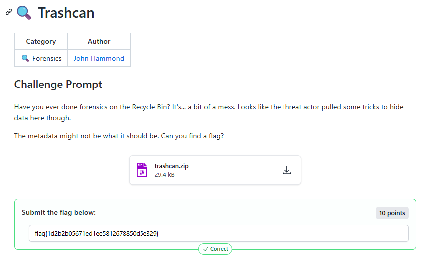
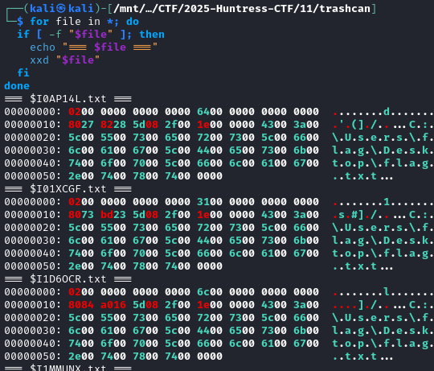
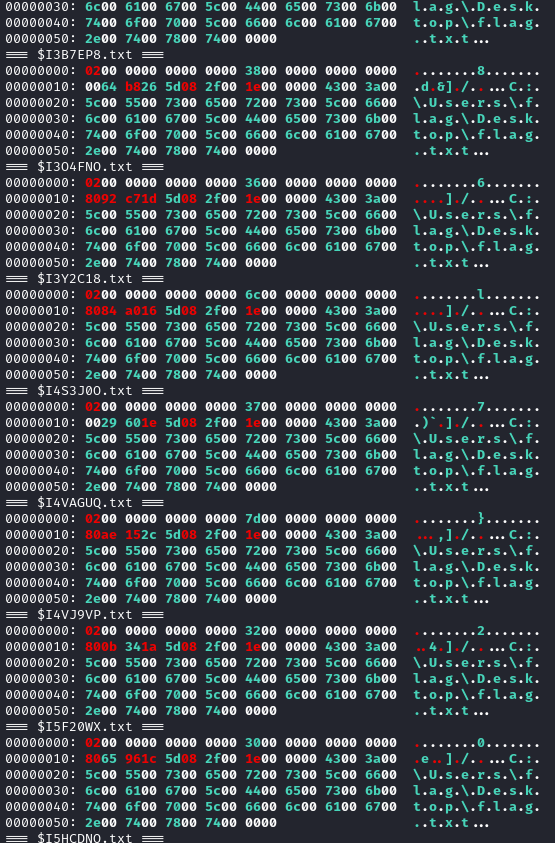
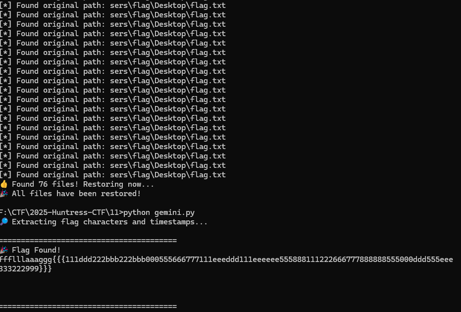
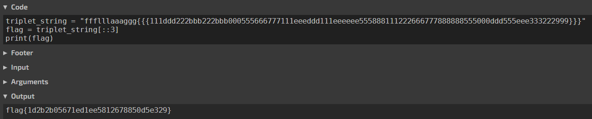
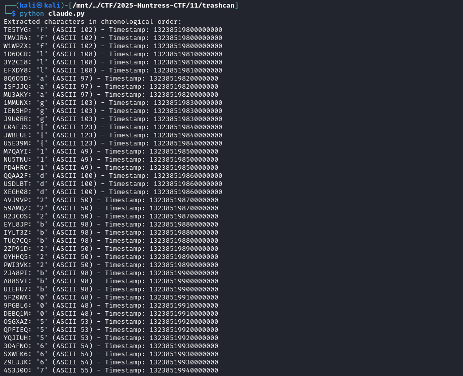
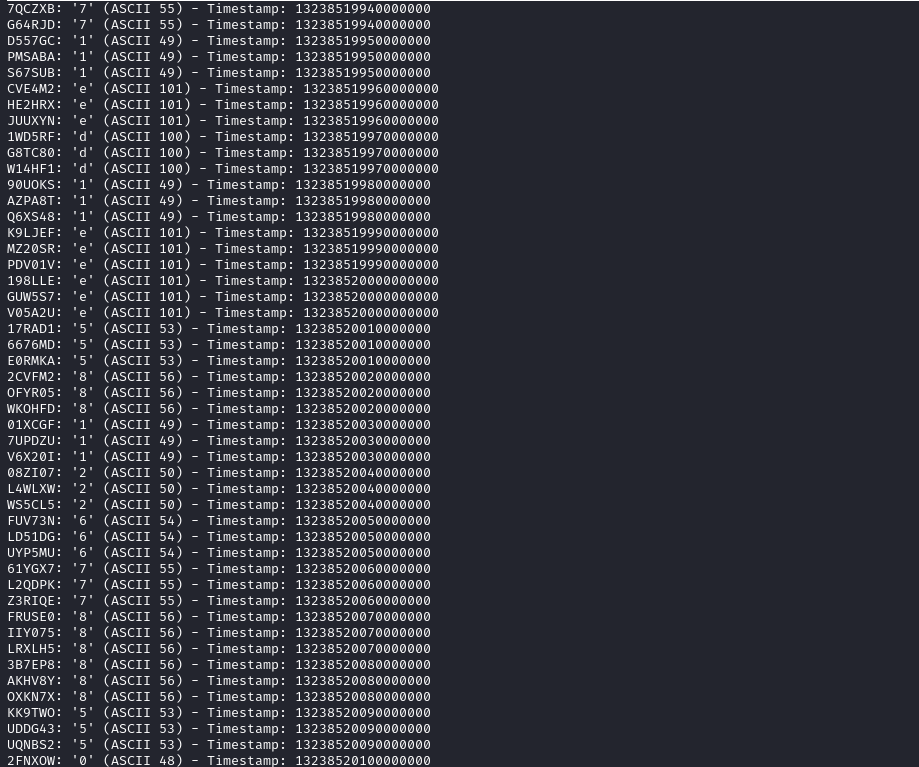
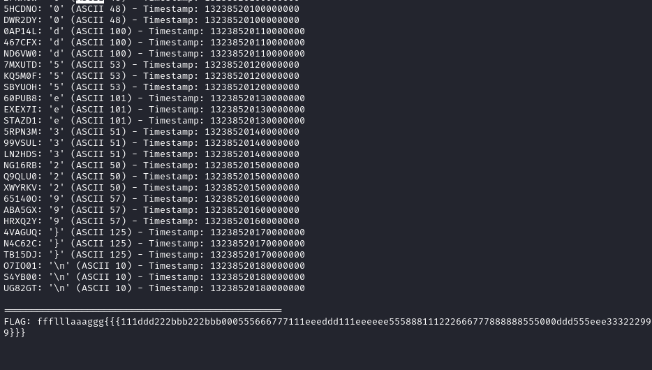
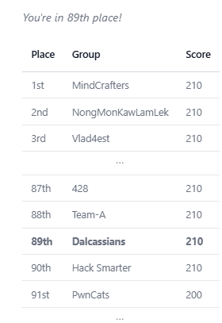

2025-10-11
🔍 Trashcan

the flag is the first charcter


We extracted them in chronological order based on the deletion timestamp stored within each metadata file
import os
import struct
def find_flag_from_metadata(trash_dir='trashcan'):
"""
Extracts flag characters hidden in the 'Record Size' field of Recycle Bin
metadata files and orders them by their deletion timestamp.
"""
flag_pieces = []
print("🔎 Extracting flag characters and timestamps...")
# Iterate over all files in the trashcan directory
for filename in os.listdir(trash_dir):
if not filename.startswith('$I'):
continue
meta_filepath = os.path.join(trash_dir, filename)
try:
with open(meta_filepath, 'rb') as f:
# Read the first 24 bytes which contain the needed fields
data = f.read(24)
if len(data) < 24:
continue
# Unpack the fields we care about:
# - The 2nd field (offset 8) is the Record Size, which holds our character.
# - The 3rd field (offset 16) is the Deletion Timestamp for sorting.
_header, flag_char_int, timestamp = struct.unpack('<QQQ', data)
# The character is the first byte of this 8-byte integer
flag_char = chr(flag_char_int & 0xFF)
# Store the timestamp and character together
flag_pieces.append((timestamp, flag_char))
except Exception as e:
print(f"⚠️ Could not process {filename}: {e}")
# Sort the pieces chronologically based on the timestamp
flag_pieces.sort(key=lambda x: x[0])
# Join the characters to form the flag
final_flag = "".join([piece[1] for piece in flag_pieces])
print("\n" + "="*40)
print("🎉 Flag Found!")
print(final_flag)
print("="*40)
if __name__ == '__main__':
# Make sure you are running this from the same directory as the 'trashcan' folder
if os.path.isdir('trashcan'):
find_flag_from_metadata()
else:
print("❌ Error: 'trashcan' directory not found. Please run this script in F:\\CTF\\2025-Huntress-CTF\\11\\")


#!/usr/bin/env python3
import os
import glob
import struct
# List to store (timestamp, character, filename)
flag_data = []
# Read all $I files (metadata files)
for filepath in sorted(glob.glob('$I*.txt')):
with open(filepath, 'rb') as f:
data = f.read()
# Byte at offset 0x08 contains our flag character
if len(data) >= 16:
flag_byte = data[8]
# Timestamp is at offset 0x10 (8 bytes, Windows FILETIME format)
timestamp = struct.unpack('<Q', data[16:24])[0]
file_id = filepath[2:-4] # Remove "$I" prefix and ".txt" suffix
flag_data.append((timestamp, chr(flag_byte), file_id))
# Sort by timestamp
flag_data.sort(key=lambda x: x[0])
print("Extracted characters in chronological order:")
for timestamp, char, file_id in flag_data:
print(f"{file_id}: {repr(char)} (ASCII {ord(char)}) - Timestamp: {timestamp}")
print("\n" + "="*50)
print("FLAG:", ''.join(char for _, char, _ in flag_data))




{kind=link}
{kind=link}
{kind=link}
{kind=link}
{kind=link}
{kind=link}
{kind=link}
{kind=link}
{kind=link}